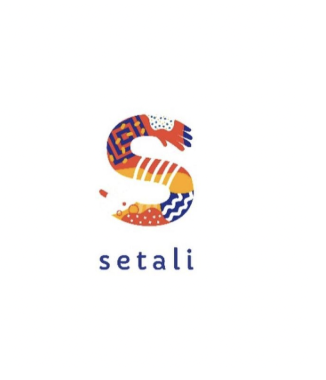
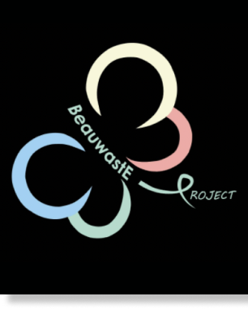

Bajulama

setali
indonesia
indonesia
Setali Indonesia adalah sebuah organisasi yang bergerak dibidang decluttering dan
thrifting guna mendukung gerakan sustainable fashion, yaitu gerakan untuk menjaga
lingkungan dari bahaya sampah industri fesyen.
Makedonation
Beauwaste adalah sebuah organisasi yang menginisiasi gerakan peduli sampah kemasan
produk skincare dan kosmetik, yang didirikan seiring meningkatnya jumlah masyarakat
pengguna produk perawatan kulit. Fokus kegiatan berupa pengelolaan dan pemanfaatan
sampah kemasan produk skincare & kosmetik melalui pemberdayaan masyarakat yang inklusif.
Organisasi ini diinisiasi oleh Dr Poppy Diah, SpKK.

beauwaste